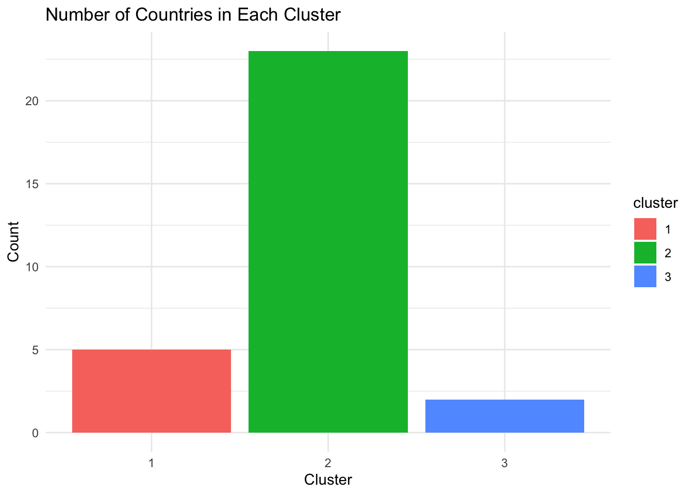
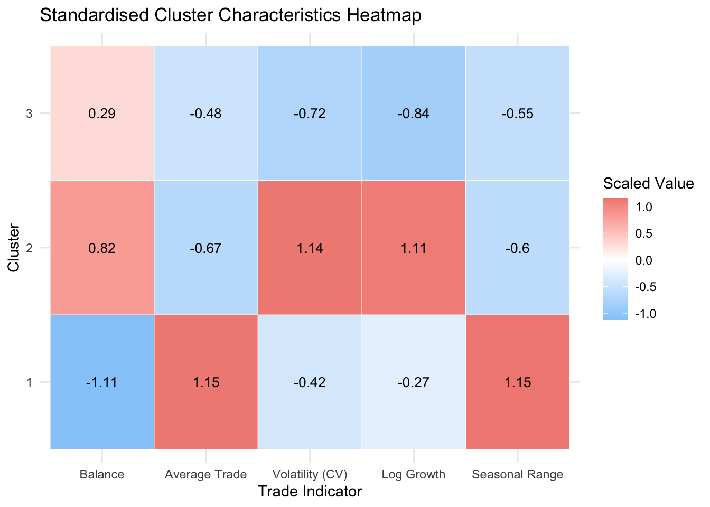
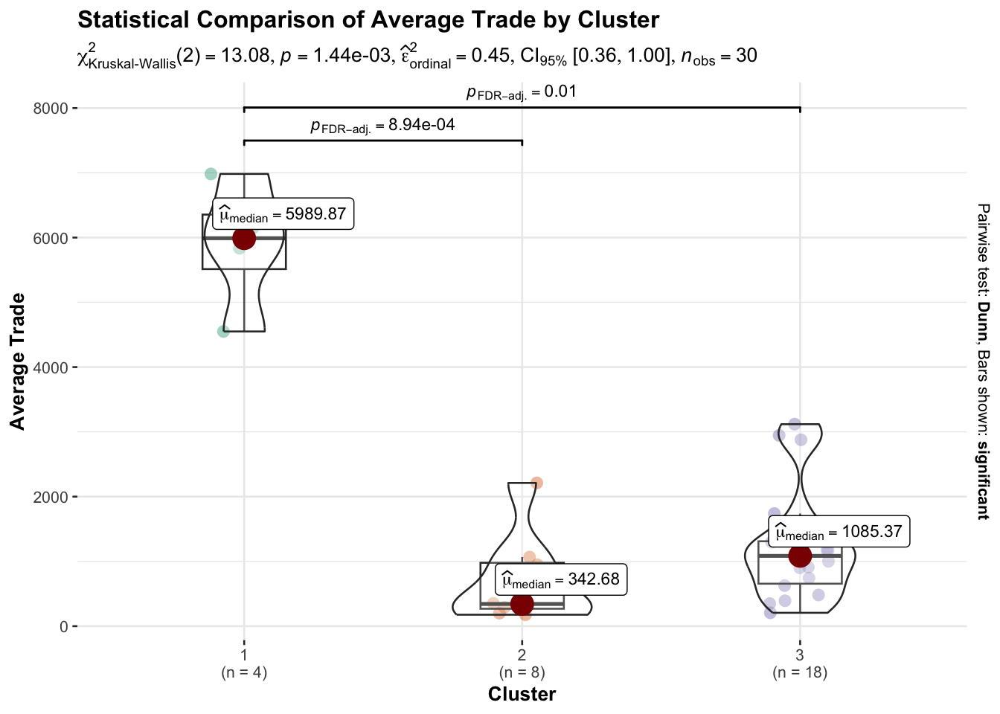
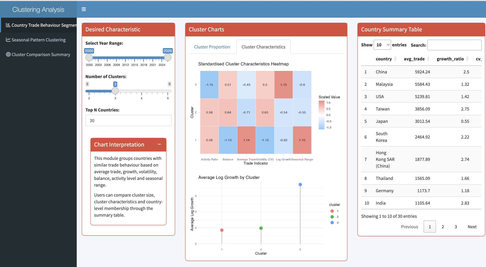
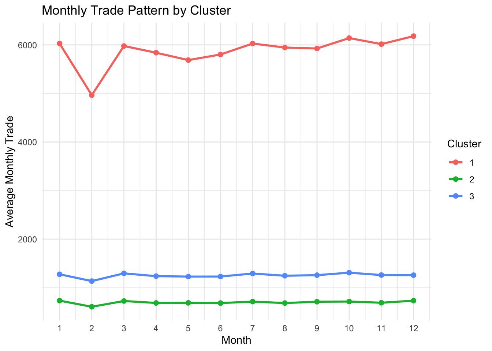
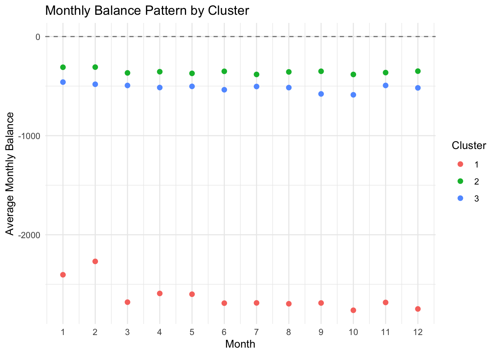
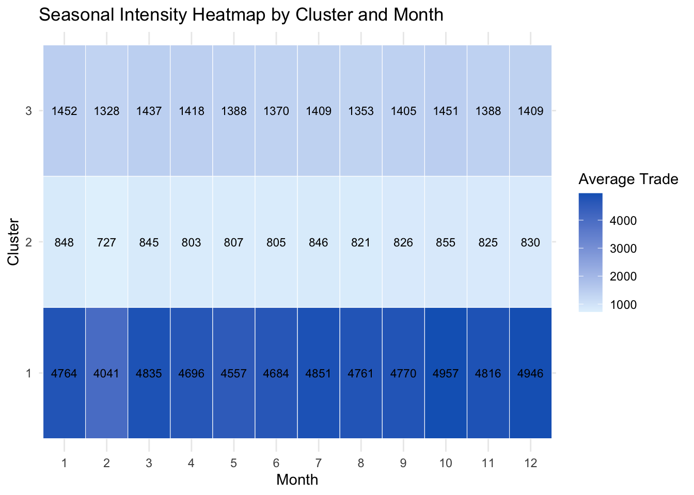
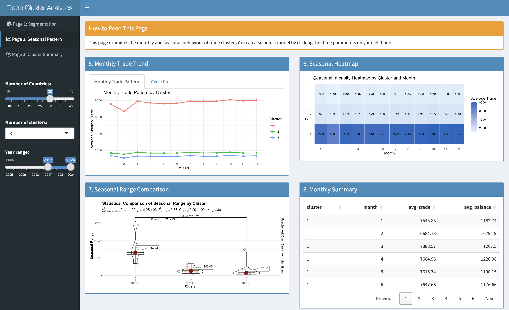
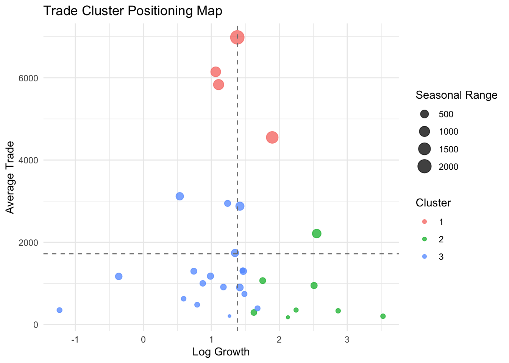
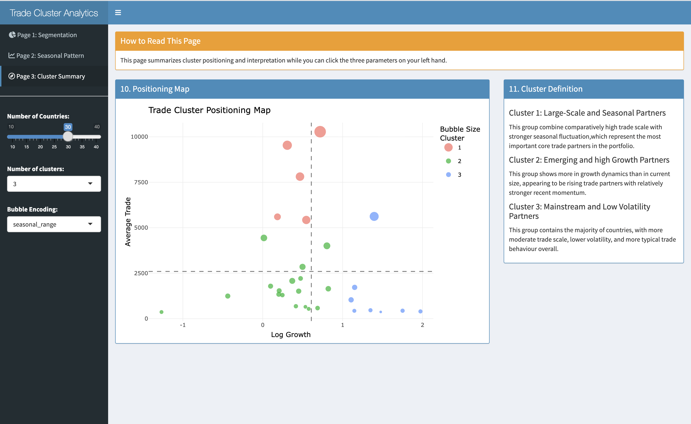

# load required packages
pacman::p_load(readxl, tidyverse, cluster, lubridate)
# import dataset
import_raw <- read_excel("data/Import.xlsx")New names:
• `` -> `...1`export_raw <- read_excel("data/Export.xlsx")New names:
• `` -> `...1`Before the analysis, I first loaded the packages required for this task and imported the two sets of raw data: Import and Export.
# load required packages
pacman::p_load(readxl, tidyverse, cluster, lubridate)
# import dataset
import_raw <- read_excel("data/Import.xlsx")New names:
• `` -> `...1`export_raw <- read_excel("data/Export.xlsx")New names:
• `` -> `...1`Since the data is currently stored in two individual Excel files, Import and Export, it is necessary to clean the two sets of data separately and then organize them into a single long table structure that can be merged before the formal analysis.
import_df <- import_raw[-1, ]
names(import_df)[1] <- "date"
# Excel serial date -> Date
import_df$date <- as.Date(as.numeric(import_df$date), origin = "1899-12-30")
import_df <- import_df %>%
mutate(across(-date, as.numeric))#clean export data, change data into date, turn data type into numeric
export_df <- export_raw[-1, ]
names(export_df)[1] <- "date"
export_df$date <- as.Date(as.numeric(export_df$date), origin = "1899-12-30")
export_df <- export_df %>%
mutate(across(-date, as.numeric))#reshaping data into long format
import_long <- import_df %>%
pivot_longer(
cols = -date,
names_to = "country",
values_to = "import_value"
)
export_long <- export_df %>%
pivot_longer(
cols = -date,
names_to = "country",
values_to = "export_value"
)#combine import and export
trade_long <- full_join(import_long, export_long, by = c("date", "country")) %>%
mutate(
import_value = replace_na(import_value, 0),
export_value = replace_na(export_value, 0),
total_trade = import_value + export_value,
trade_balance = export_value - import_value,
trade_ratio = if_else(import_value > 0, export_value / import_value, NA_real_),
year = year(date),
month = month(date)
)glimpse(trade_long)Rows: 30,068
Columns: 9
$ date <date> 2000-01-01, 2000-01-01, 2000-01-01, 2000-01-01, 2000-01…
$ country <chr> "America", "Asia", "Europe", "Oceania", "Africa", "Argen…
$ import_value <dbl> 2596.400, 10569.000, 2314.300, 275.900, 108.200, 4.076, …
$ export_value <dbl> 0, 0, 0, 0, 0, 0, 0, 0, 0, 0, 0, 0, 0, 0, 0, 0, 0, 0, 0,…
$ total_trade <dbl> 2596.400, 10569.000, 2314.300, 275.900, 108.200, 4.076, …
$ trade_balance <dbl> -2596.400, -10569.000, -2314.300, -275.900, -108.200, -4…
$ trade_ratio <dbl> 0, 0, 0, 0, 0, 0, 0, 0, 0, NA, NA, 0, NA, 0, 0, 0, 0, 0,…
$ year <dbl> 2000, 2000, 2000, 2000, 2000, 2000, 2000, 2000, 2000, 20…
$ month <dbl> 1, 1, 1, 1, 1, 1, 1, 1, 1, 1, 1, 1, 1, 1, 1, 1, 1, 1, 1,…summary(trade_long$year) Min. 1st Qu. Median Mean 3rd Qu. Max.
2000 2006 2013 2013 2020 2026 range(trade_long$year, na.rm = TRUE)[1] 2000 2026Analyzing all countries directly with providing broader coverage would also introduce a large number of countries with consistently low trade volumes and limited information, making clustering results more difficult to interpret.
Furthermore, too many inactive countries in the sample can lead to “low-value countries clustering together,” reducing the cluster’s discriminative power. Therefore, in this prototype, I chose to first filter out the Top 30 countries based on total trade volume.
#we need to exclude the regions which are not countries
exclude_regions <- c("Asia", "Europe", "America", "EU", "Oceania", "Africa")
trade_long_clean <- trade_long %>%
filter(!country %in% exclude_regions)
#then we select top 30 countries
top30_countries <- trade_long_clean %>%
group_by(country) %>%
summarise(
total_trade_sum = sum(total_trade, na.rm = TRUE),
.groups = "drop"
) %>%
arrange(desc(total_trade_sum)) %>%
slice_head(n = 30) %>%
pull(country)
trade_top30 <- trade_long_clean %>%
filter(country %in% top30_countries)unique(trade_top30$country) [1] "Brazil" "Canada" "Mexico"
[4] "USA" "Cambodia" "China"
[7] "Hong Kong SAR (China)" "India" "Indonesia"
[10] "Japan" "South Korea" "Kuwait"
[13] "Malaysia" "Philippines" "Qatar"
[16] "Saudi Arabia" "Taiwan" "Thailand"
[19] "United Arab Emirates" "Vietnam" "Belgium"
[22] "France" "Germany" "Italy"
[25] "Netherlands" "Russia" "Switzerland"
[28] "United Kingdom" "Australia" "New Zealand" length(unique(trade_top30$country))[1] 30To perform clustering, I couldn’t simply dump monthly detailed data. Instead, I needed to first summarize each country into a set of characteristics that could represent its overall trade relations.
In this section, I constructed the following features:
avg_trade: Average trade size
recent_trade: Average trade in recent years
early_trade: Average trade in earlier periods
sd_trade: Volatility
active_month_ratio: Percentage of active months
avg_import: Average imports
avg_export: Average exports
avg_balance: Average trade balance
avg_ratio: Average import/export ratio
Based on these, I further derived two variables that better fit the design:
growth_ratio: Growth rate in recent years relative to earlier periods
cv_trade: Relative volatility (coefficient of variation)
The reason for this approach is that I hope the final clustering results will more closely resemble the following categories of country relations:
Countries with consistently high and stable long-term trade volumes
Emerging countries with significant trade growth in recent years
Countries with highly volatile and seasonal relationships
Countries with persistently low activity levels
min_year <- min(trade_top30$year, na.rm = TRUE)
max_year <- max(trade_top30$year, na.rm = TRUE)#base feature
country_base <- trade_top30 %>%
group_by(country) %>%
summarise(
avg_trade = mean(total_trade, na.rm = TRUE),
sd_trade = sd(total_trade, na.rm = TRUE),
active_month_ratio = mean(total_trade > 0, na.rm = TRUE),
avg_import = mean(import_value, na.rm = TRUE),
avg_export = mean(export_value, na.rm = TRUE),
avg_balance = mean(trade_balance, na.rm = TRUE),
.groups = "drop"
)#recent & early trade
recent_trade_tbl <- trade_top30 %>%
filter(year >= max_year - 2) %>%
group_by(country) %>%
summarise(
recent_trade = mean(total_trade, na.rm = TRUE),
.groups = "drop"
)
early_trade_tbl <- trade_top30 %>%
filter(year <= min_year + 2) %>%
group_by(country) %>%
summarise(
early_trade = mean(total_trade, na.rm = TRUE),
.groups = "drop"
)#seasonal feature
seasonal_features <- trade_top30 %>%
group_by(country, month) %>%
summarise(
monthly_avg_trade = mean(total_trade, na.rm = TRUE),
.groups = "drop"
) %>%
group_by(country) %>%
summarise(
seasonal_range = max(monthly_avg_trade, na.rm = TRUE) - min(monthly_avg_trade, na.rm = TRUE),
.groups = "drop"
)#combine all features
country_features <- country_base %>%
left_join(recent_trade_tbl, by = "country") %>%
left_join(early_trade_tbl, by = "country") %>%
left_join(seasonal_features, by = "country") %>%
mutate(
growth_ratio = log((recent_trade + 1) / (early_trade + 1)),
cv_trade = if_else(avg_trade > 0, sd_trade / avg_trade, NA_real_)
)
#check
colSums(is.na(country_features)) country avg_trade sd_trade active_month_ratio
0 0 0 0
avg_import avg_export avg_balance recent_trade
0 0 0 0
early_trade seasonal_range growth_ratio cv_trade
0 0 0 0 2.5 define final varaibles
Before clustering, I only retain the following variables:
avg_trade
growth_ratio
cv_trade
active_month_ratio
seasonal_range
avg_balance
Also, I remove records with missing values.
country_features2 <- country_features %>%
select(
country,
avg_trade,
growth_ratio,
cv_trade,
active_month_ratio,
seasonal_range,
avg_balance
) %>%
drop_na()nrow(country_features2)[1] 30summary(country_features2) country avg_trade growth_ratio cv_trade
Length:30 Min. : 148.7 Min. :-0.2943 Min. :0.3310
Class :character 1st Qu.: 361.1 1st Qu.: 1.4083 1st Qu.:0.5708
Mode :character Median : 912.5 Median : 1.8737 Median :0.7168
Mean :1509.3 Mean : 2.2819 Mean :0.7965
3rd Qu.:1799.7 3rd Qu.: 2.7450 3rd Qu.:0.9325
Max. :5924.2 Max. : 8.7378 Max. :1.8461
active_month_ratio seasonal_range avg_balance
Min. :0.8850 Min. : 34.29 Min. :-3140.9
1st Qu.:1.0000 1st Qu.: 112.19 1st Qu.: -838.3
Median :1.0000 Median : 192.41 Median : -440.2
Mean :0.9923 Mean : 330.61 Mean : -743.0
3rd Qu.:1.0000 3rd Qu.: 324.65 3rd Qu.: -149.6
Max. :1.0000 Max. :1818.11 Max. : 1034.9 This step involves standardization before clustering. Ideally, in this prototype, I’ll use 3 clusters:
Large-Scale Partners
Mainstream Partners
Of course, the specific clusters will depend on the results from shinyapp and will require further adjustments.
cluster_data <- country_features2 %>%
select(
avg_trade,
growth_ratio,
cv_trade,
active_month_ratio,
seasonal_range,
avg_balance
)
cluster_data_scaled <- scale(cluster_data)
set.seed(123)
km3 <- kmeans(cluster_data_scaled, centers = 3, nstart = 25)
country_features2$cluster <- as.factor(km3$cluster)table(country_features2$cluster)
1 2 3
5 23 2 This section is to identify different types of trading partners.
The following is a bar chart showing how many countries are included in each cluster.
plot_table1 <- country_features2 %>%
count(cluster)
ggplot(plot_table1, aes(x = cluster, y = n, fill = cluster)) +
geom_col() +
labs(
title = "Number of Countries in Each Cluster",
x = "Cluster",
y = "Count"
) +
theme_minimal()
Clustering results indicate that most countries have relatively mainstream trade patterns, while a few countries exhibit more distinct characteristics.
Next, I used heatmap to compare the overall performance of each cluster across several key features.
In this section, I focused on comparing:
Average Trade
Growth Ratio
Volatility (CV) Trade
Activity Month Ratio
Seasonal Range
Average Balance
plot_table2_scaled <- country_features2 %>%
group_by(cluster) %>%
summarise(
avg_trade = mean(avg_trade, na.rm = TRUE),
growth_ratio = mean(growth_ratio, na.rm = TRUE),
cv_trade = mean(cv_trade, na.rm = TRUE),
active_month_ratio = mean(active_month_ratio, na.rm = TRUE),
seasonal_range = mean(seasonal_range, na.rm = TRUE),
avg_balance = mean(avg_balance, na.rm = TRUE),
.groups = "drop"
)
plot_table2_scaled_num <- plot_table2_scaled %>%
select(-cluster) %>%
scale() %>%
as.data.frame()
plot_table2_scaled_num$cluster <- plot_table2_scaled$cluster
plot_table2_scaled_long <- plot_table2_scaled_num %>%
pivot_longer(
cols = -cluster,
names_to = "variable",
values_to = "value"
)
ggplot(plot_table2_scaled_long, aes(x = variable, y = cluster, fill = value)) +
geom_tile(color = "white") +
geom_text(aes(label = round(value, 2)), size = 3.5) +
scale_fill_gradient2(
low = "#90CAF9",
mid = "white",
high = "#F28B82",
midpoint = 0
) +
scale_x_discrete(
labels = c(
"avg_trade" = "Average Trade",
"growth_ratio" = "Log Growth",
"cv_trade" = "Volatility (CV)",
"active_month_ratio" = "Activity Ratio",
"seasonal_range" = "Seasonal Range",
"avg_balance" = "Balance"
)
) +
labs(
title = "Standardised Cluster Characteristics Heatmap",
x = "Trade Indicator",
y = "Cluster",
fill = "Scaled Value"
) +
theme_minimal()
I used a lollipop chart to compare the average growth ratio of each cluster.
plot_table3 <- country_features2 %>%
group_by(cluster) %>%
summarise(
avg_growth_ratio = mean(growth_ratio, na.rm = TRUE),
.groups = "drop"
)
ggplot(plot_table3, aes(x = cluster, y = avg_growth_ratio)) +
geom_segment(aes(xend = cluster, y = 0, yend = avg_growth_ratio), color = "grey60") +
geom_point(aes(color = cluster), size = 4) +
labs(
title = "Average log Growth by Cluster",
x = "Cluster",
y = "Average Growth Ratio"
) +
theme_minimal()
country_table <- country_features2 %>%
mutate(
avg_trade = round(avg_trade, 2),
growth_ratio = round(growth_ratio, 2),
cv_trade = round(cv_trade, 2),
active_month_ratio = round(active_month_ratio, 2),
seasonal_range = round(seasonal_range, 2),
avg_balance = round(avg_balance, 2)
) %>%
arrange(cluster, desc(avg_trade))
country_table# A tibble: 30 × 8
country avg_trade growth_ratio cv_trade active_month_ratio seasonal_range
<chr> <dbl> <dbl> <dbl> <dbl> <dbl>
1 China 5924. 2.5 0.76 1 1818.
2 Malaysia 5584. 1.32 0.56 1 886.
3 USA 5240. 1.42 0.57 1 918.
4 Taiwan 3856. 2.75 0.94 1 1208.
5 Japan 3013. 0.55 0.33 1 417.
6 South Korea 2465. 2.22 0.69 1 474.
7 Hong Kong … 1878. 2.74 1.42 1 548.
8 Thailand 1565. 1.66 0.76 1 336.
9 Germany 1174. 1.18 0.4 1 210.
10 India 1106. 2.83 0.76 1 126.
# ℹ 20 more rows
# ℹ 2 more variables: avg_balance <dbl>, cluster <fct>As mentioned earlier, the charts and tables above will be used to populate the first page of our application’s “Country Trade Behavior Segmentation” module.
Motivation: To provide users with an overall visual view of the country trade grouping results before they proceed to the next page, which forms the basis for subsequent analysis.
Below is a visual of the prototype for this page.

Functionality and Interactivity
Users only need to select the year range, number of clusters, and top N countries/regions once. The charts and tables will update immediately after the user’s selection.
Other Considerations
I chose to use a single control panel for users to filter and select because users would likely want to see all visualizations convey the same cluster settings and country/region grouping results. This makes the page more consistent and reduces unnecessary switching between different parameter controls.
In section 2.9, we further compare whether these clusters still exhibit different behavioral patterns at the monthly level.
Therefore, I first merged the cluster labels obtained from Page 1 back into the original monthly data, so that each country-month record carries the corresponding cluster information. This allows us to subsequently observe trade behavior along the cluster × month dimension.
#join cluster
trade_clustered <- trade_top30 %>%
left_join(
country_features2 %>% select(country, cluster),
by = "country"
)
monthly_cluster_summary <- trade_clustered <- trade_top30 %>%
left_join(
country_features2 %>% select(country, cluster),
by = "country"
)
#check
glimpse(trade_clustered)Rows: 9,390
Columns: 10
$ date <date> 2000-01-01, 2000-01-01, 2000-01-01, 2000-01-01, 2000-01…
$ country <chr> "Brazil", "Canada", "Mexico", "USA", "Cambodia", "China"…
$ import_value <dbl> 27.187, 52.631, 47.063, 2370.781, 14.062, 796.724, 481.8…
$ export_value <dbl> 0, 0, 0, 0, 0, 0, 0, 0, 0, 0, 0, 0, 0, 0, 0, 0, 0, 0, 0,…
$ total_trade <dbl> 27.187, 52.631, 47.063, 2370.781, 14.062, 796.724, 481.8…
$ trade_balance <dbl> -27.187, -52.631, -47.063, -2370.781, -14.062, -796.724,…
$ trade_ratio <dbl> 0, 0, 0, 0, 0, 0, 0, 0, NA, 0, 0, 0, 0, 0, 0, 0, 0, 0, 0…
$ year <dbl> 2000, 2000, 2000, 2000, 2000, 2000, 2000, 2000, 2000, 20…
$ month <dbl> 1, 1, 1, 1, 1, 1, 1, 1, 1, 1, 1, 1, 1, 1, 1, 1, 1, 1, 1,…
$ cluster <fct> 2, 2, 2, 1, 2, 1, 2, 2, 3, 1, 2, 2, 1, 2, 2, 2, 1, 2, 2,…table(is.na(trade_clustered$cluster))
FALSE
9390 monthly_cluster_summary <- trade_clustered %>%
group_by(cluster, month) %>%
summarise(
avg_trade = mean(total_trade, na.rm = TRUE),
avg_import = mean(import_value, na.rm = TRUE),
avg_export = mean(export_value, na.rm = TRUE),
avg_balance = mean(trade_balance, na.rm = TRUE),
.groups = "drop"
)ggplot(monthly_cluster_summary,
aes(x = month, y = avg_trade, color = cluster, group = cluster)) +
geom_line(linewidth = 1) +
geom_point(size = 2) +
scale_x_continuous(breaks = 1:12) +
labs(
title = "Monthly Trade Pattern by Cluster",
x = "Month",
y = "Average Monthly Trade",
color = "Cluster"
) +
theme_minimal()
This cycle plot is to show the Monthly trade in years which reflects the time-series patterns.
cluster_year_month <- trade_clustered %>%
filter(year >= 2017) %>%
group_by(cluster, year, month) %>%
summarise(
avg_trade = mean(total_trade, na.rm = TRUE),
.groups = "drop"
)
cluster_year_month$month <- factor(
cluster_year_month$month,
levels = 1:12,
labels = month.abb,
ordered = TRUE
)
hline_data <- cluster_year_month %>%
group_by(cluster, month) %>%
summarise(
avgvalue = mean(avg_trade, na.rm = TRUE),
.groups = "drop"
)
ggplot() +
geom_line(
data = cluster_year_month,
aes(x = year, y = avg_trade, group = month),
colour = "black"
) +
geom_hline(
data = hline_data,
aes(yintercept = avgvalue),
linetype = 2,
colour = "red",
linewidth = 0.4
) +
facet_grid(cluster ~ month) +
scale_x_continuous(breaks = seq(2017, 2026, by = 3)) +
labs(
title = "Cycle Plot of Monthly Trade by Cluster",
x = "",
y = "Average Monthly Trade"
) +
theme_minimal() +
theme(
axis.text.x = element_text(size = 6, angle = 45, hjust = 1),
strip.text = element_text(size = 10)
)
We better not to put this into final UI design because
ggplot(monthly_cluster_summary,
aes(x = month, y = avg_balance, color = cluster, group = cluster)) +
geom_hline(yintercept = 0, linetype = "dashed", color = "grey50")+
geom_point(size = 2) +
scale_x_continuous(breaks = 1:12) +
labs(
title = "Monthly Balance Pattern by Cluster",
x = "Month",
y = "Average Monthly Balance",
color = "Cluster"
) +
theme_minimal()
ggplot(monthly_cluster_summary, aes(x = factor(month), y = cluster, fill = avg_trade)) +
geom_tile(color = "white") +
geom_text(aes(label = round(avg_trade, 0)), size = 3) +
scale_fill_gradient(
low = "#E3F2FD",
high = "#1565C0"
) +
labs(
title = "Seasonal Intensity Heatmap by Cluster and Month",
x = "Month",
y = "Cluster",
fill = "Average Trade"
) +
theme_minimal()
monthly_table <- monthly_cluster_summary %>%
mutate(
avg_trade = round(avg_trade, 2),
avg_import = round(avg_import, 2),
avg_export = round(avg_export, 2),
avg_balance = round(avg_balance, 2)
)
monthly_table# A tibble: 36 × 6
cluster month avg_trade avg_import avg_export avg_balance
<fct> <dbl> <dbl> <dbl> <dbl> <dbl>
1 1 1 4764. 3584. 1180. -2404.
2 1 2 4041. 3155. 886. -2269.
3 1 3 4835. 3758. 1078. -2680.
4 1 4 4696. 3644. 1052. -2592.
5 1 5 4557. 3579. 979. -2600.
6 1 6 4684. 3687. 997. -2690.
7 1 7 4851. 3769. 1082. -2688.
8 1 8 4761. 3729. 1032. -2696.
9 1 9 4770. 3729. 1041. -2689.
10 1 10 4957. 3859. 1097. -2762
# ℹ 26 more rowsThis page showcases the monthly transaction behavior visualization of the clusters identified on the previous page.
Motivation: As the bridge of the former cluster segmentation, let users get more information on the monthly transaction and get more knowledge of the seasonal changes.
Below is a visual of the prototype for this page.

Functionality and Interactivity
Users only need to select the year range, number of clusters, and top N countries/regions once. Line charts, seasonal heatmaps, and data tables will update immediately after user selection.
Other Considerations
I chose to use a single control panel for users to filter and select because users might want to see all charts display the same clustering settings and seasonal statistics. This makes the page more consistent and reduces unnecessary switching between different parameter controls.
In this section, I use a positioning map to summarize what these three types of partners mean.The goal is to integrate the results from the first two pages into a more concise and user-friendly summary view.
Therefore, I used a bubble chart with quadrant lines to construct a Trade Cluster Positioning Map.
In this chart:
The x-axis represents Log Growth
The y-axis represents Average Trade
The bubble size represents the Seasonal Range
The color represents the cluster to which a country belongs
Additionally, I added two reference dashed lines to represent the average levels of Log Growth and Average Trade for all countries, thus dividing the chart into four regions.
ggplot(country_features2,
aes(x = growth_ratio, y = avg_trade, size = seasonal_range, color = cluster)) +
geom_point(alpha = 0.7) +
geom_vline(xintercept = mean(country_features2$growth_ratio, na.rm = TRUE),
linetype = "dashed", color = "grey50") +
geom_hline(yintercept = mean(country_features2$avg_trade, na.rm = TRUE),
linetype = "dashed", color = "grey50") +
labs(
title = "Trade Cluster Positioning Map",
x = "Log Growth",
y = "Average Trade",
size = "Seasonal Range",
color = "Cluster"
) +
theme_minimal()
Cluster 1: Large-Scale Partners
These countries are characterized by high average trade volume for most months of the year, stable growth rates, and relatively large seasonal fluctuations. Therefore, they can be considered a group of large, stable trading partners in the long term.
Cluster 2: Mainstream Partners
This group comprises the vast majority of the sample, with most indicators at a moderate level. Specifically, they are neither extremely high-growth nor extremely large-scale, thus representing the most typical and common mainstream trading partners.
Cluster 3: Emerging Partners
Although this group of countries does not have the largest overall trade volume, they stand out the most in terms of growth indicators, particularly indicating a more pronounced upward trend in recent years. Therefore, we consider this group of countries to be more characteristic of emerging trading partners.
As mentioned above, Section 2.10.1 Trade Cluster Positioning Map and Section 2.10.2 Cluster Interpretation Panel will be used together to generate the third page in our app: the Cluster Comparison Summary.
Motivation: To provide users with a more integrated cluster overview after they have completed segmentation and seasonal comparison.
Below is a visual of the prototype for this page.

Functionality and interactivityOn this page, users can select a specific year range and the number of clusters to update the results. Users can also switch bubble size variables, such as seasonal range and volatility, to observe differences between clusters from different perspectives.
Additional Consideration
In this page, I didn’t continue using a heatmap as the main image; instead, I used a bubble positioning map. This is because I believe a summary page needs a visual way to directly express “relative positional relationships.” Therefore, by adding an average reference line and dividing the page into four quadrants, users can more clearly identify whether different clusters are biased towards high scale, high growth, or are in a more intermediate position.
Kam, T.S. (2025).R for visual Analytics. https://r4va.netlify.app/chap17